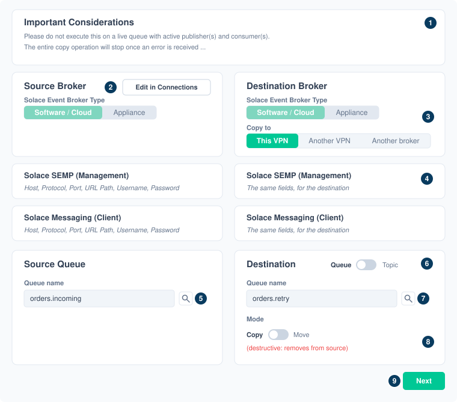
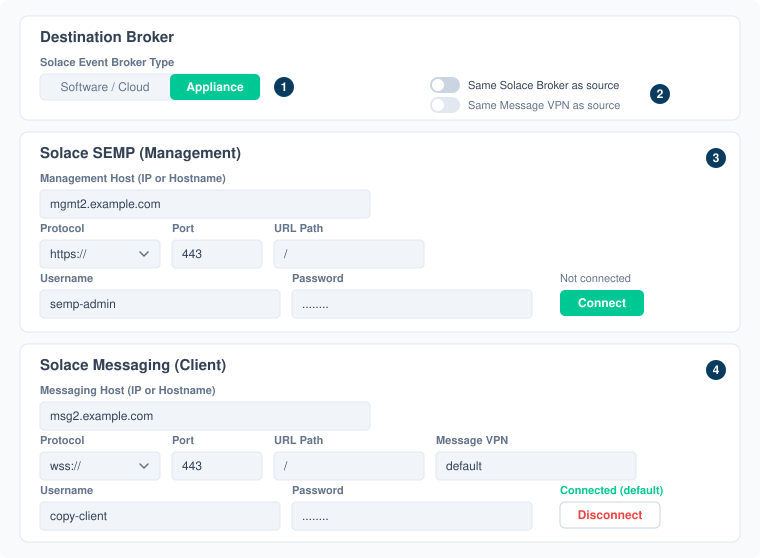
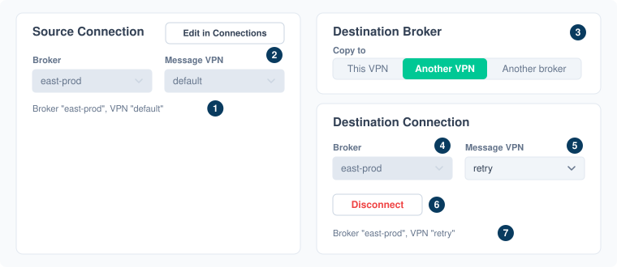
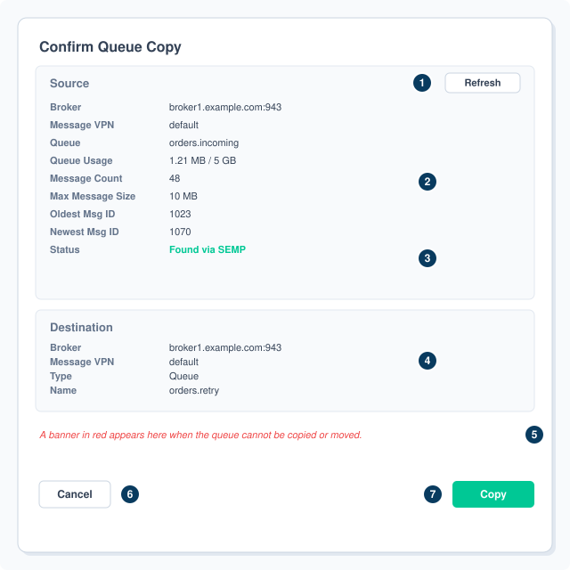
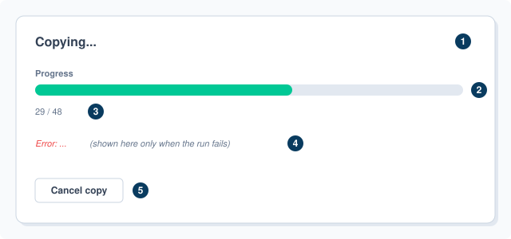

Copy the messages of a queue to another queue or to a topic, or move them, on the same broker or on another one. A copy leaves the source as it is. A move takes each message off the source once the destination has it.
Queue Copy needs the client connection from the Connections page. Until you connect, the page shows Connection Required and asks you to establish a primary Solace connection before copying messages.
The SEMP connection is not required, but it helps. With it, the magnifier buttons can list queues for you, and the check you make before a run reads the queue's figures from the broker. Without it, the check browses the queue to count its messages: that takes longer, and it cannot show the queue's quota or its largest allowed message.

The three source cards, Source Broker, Solace SEMP (Management) and Solace Messaging (Client), are a mirror of the connection you made on the Connections page. Their boxes are locked. To change anything, press Edit in Connections. If you are signed in to a gateway, the broker's name appears in place of an address and the password boxes stay empty, because the gateway keeps the credentials.
The only box you fill in on the source side is the queue.
If the queue you pick is in another Message VPN than the one your client connection uses, the page hands over to the Connections page, which asks Current VPN is ... Switch to ...? and switches the connection to that VPN once you press Switch. You then come back to Queue Copy with the queue name filled in. If you decline the switch, you stay where you were.
Both magnifier buttons open the same dialog. Its title is Pick source queue or Pick destination queue.
| Part | What it does |
|---|---|
| Message VPN | Type to narrow the list, or choose from it. The list opens on the Message VPN the page is using, when it can. A line under the boxes says how many VPNs have loaded. |
| Queue | Locked until you choose a Message VPN. Then type to narrow the list (any part of the name, in any letter case), or choose from it. |
| The two refresh buttons | Fetch the VPN list, or the queue list of the chosen VPN, again from the broker. The dialog remembers lists it has loaded, so opening it again is quick. |
| Confirm | Switched on once you have chosen a queue. It fills the page with your choice. |
| Cancel and the close button | Close the dialog and change nothing. |
In a signed-in session the lists hold only what you are entitled to see. The destination's list holds only the queues you may write to.
The destination is where the messages go. It can be the connection you already have, another Message VPN on the same broker, or another broker. What the page shows for it depends on how you connected.
The Destination Broker card holds the two shortcuts. Both are ticked when the page opens.
| Same Solace Broker | Same Message VPN | What it means |
|---|---|---|
| Ticked | Ticked | The destination is your client connection itself. The destination boxes are filled in and locked, and there is nothing to connect. |
| Ticked | Not ticked | Another Message VPN on the same broker. The broker and SEMP boxes are filled in and locked, and the destination uses your SEMP connection. The Message VPN, username and password boxes are yours to fill in, and the Messaging card needs its own Connect. |
| Not ticked | Locked, not ticked | Another broker. Every box is yours to fill in, and both cards need their own Connect. |
Changing either shortcut closes any destination connection you opened and empties the destination password boxes, so you start from a clean slate. While the destination's messaging connection is being made, both shortcuts are locked, and their tooltip says Locked while the destination connects.
When the page is served over https:// without the gateway, the Protocol lists on the destination cards offer only https:// and wss://, as on the Connections page.
If you connected on the Connections page by typing the broker's details, the destination has the cards below. Fill in the ones the table above says are yours.

Pressing Enter in a box presses the Connect button of its card. The broker host belongs to both cards, and Enter there presses the SEMP Connect. While a connection is up, its boxes, and the broker host, are locked.
The page checks what you typed before it connects. A SEMP username or password the broker would refuse, or a client username with a character the broker does not allow, is refused with the reason on the card. If the broker rejects the details, the card says so in red: SEMP authentication failed (401)., SEMP error: followed by the reason, or Connection failed: followed by the reason.
If you are signed in to a gateway, you type no addresses and no passwords. The broker host and both cards give way to one card, Destination Connection. The two shortcuts stay.

If the connect fails, the card shows one line for each part that failed, SEMP (management) or Messaging (client), and says when a part came up and was closed again because the other failed. Each failure is also added in full to the notification bell. If the destination has no connection available to your account, the card says No connections are available for your account. Ask an administrator to grant access.
While Same Solace Broker as source and Same Message VPN as source are both ticked, the card is replaced by a note saying that the destination is the source connection: nothing to connect. While a connect is running, the card's lists and the two shortcuts are locked. If the destination on show changes before the connection comes up, for example because a refresh of your entitlements removes the Message VPN you chose, the late connection is dropped and the card says The destination changed while connecting. Connect again.
If your sign-in changes to or from a signed-in session while the page is open, any destination connection and the target you chose are dropped.
The Destination card says what the messages go to.
The page checks the name as you type, with the rules the messaging library applies when it publishes. A name that breaks one is marked, the reason appears under the box, and Next stays off.
| Rule | The page says |
|---|---|
| At most 250 bytes for a topic, 241 for a queue (the library adds a prefix to a queue name). | Too long: at most N bytes. |
A / may not start or end the name, or follow another /. | Empty level at character N: a "/" cannot start or end the name, or follow another "/". |
A * may only end a level. | "*" at character N may only end a level. |
A name may not start with the library's reserved prefixes, #P2P/QUE/ and #P2P/QTMP/. | "#P2P/QUE/" is a reserved prefix. (or the same for the other prefix) |
Mode sits at the bottom of the Destination card.
| Mode | What happens |
|---|---|
| Copy (the default) | Every message is sent to the destination. The source keeps all of them. It needs only permission to read the source queue. |
| Move, marked as destructive | Every message is sent to the destination, and as soon as the destination has acknowledged it, the page asks the broker to remove it from the source. It needs permission to consume from the source queue. |
Next opens the Confirm Queue Copy dialog. It stays off until all of these hold:
If you disconnect the client connection, the page returns to Connection Required.
Before anything moves, the dialog checks the source queue and shows what it found. You read the figures, then start the run, or cancel.

| Field | Shows |
|---|---|
| Broker | The broker you are connected to, as address and port. In a signed-in session, its name. |
| Message VPN | The Message VPN of the queue. When the broker reports it, that is the value shown. |
| Queue | The name you gave. |
| Queue Usage | The space the messages use, and, when the broker reports it, the queue's quota, as used / quota. Without a quota, the space alone. (unavailable) when neither is known. |
| Message Count | How many messages the queue holds. This is the number the run works to. |
| Max Message Size | The largest message the queue accepts. This row is left out when the page had to browse the queue because SEMP is not connected. |
| Oldest Msg ID and Newest Msg ID | The first and last messages the run will handle. The run reads the queue once, from the oldest to the newest. |
| Status | Checking... while it works, then Found via SEMP, Found via QueueBrowser or Not Found. |
The Destination block repeats where the messages will go: Broker, Message VPN, Type (Queue or Topic) and Name (or Topic). A value the form does not yet hold reads (not set).
(loading...). The bind must answer within 10 seconds, or the check fails with Verification timed out after 10s. Once bound, counting ends when no message has arrived for 2 seconds.When the check finds a problem, the start button stays off.
| You see | Why | What to do |
|---|---|---|
Not Found and a red message such as Source queue "orders.incoming" not found in VPN "default". | No such queue, or the broker refused the request. The message gives the broker's reason. | Cancel, correct the queue name, and press Next again. |
You are not entitled to queue "orders.incoming". | A signed-in session: the queue is not one your account may see. | Choose another queue. |
No primary Solace session -- reconnect and retry. | The client connection dropped. | Connect again on the Connections page. |
| A red banner: Queue is empty, nothing to copy or move | The queue holds no message, so there is nothing to copy or move. | Cancel, or press Refresh once messages have arrived. |
| A red banner: Move requires consume permission on this queue | You chose Move, and you may read the queue but not consume from it. In a signed-in session the same banner appears when your account may not operate on the queue. | Cancel, choose Copy and press Next again. |
| A red banner: You don't have access to this queue | You are not the queue's owner and its permission for others is No-Access. Both Copy and Move are blocked. | Connect as the owner, or as a user with at least read-only permission, then press Refresh. |
The owner of a queue always has full access. When the queue's owner is the username of your client connection, the dialog treats the queue as read and write, whatever its permission for others says.
Press the start button. The dialog changes to the run.

The page sends the messages oldest first, and waits for the destination to acknowledge them. A message counts as sent only once its acknowledgement has arrived. A move asks the broker to remove each message from the source straight after its acknowledgement, not in a batch at the end.
While the run is going, every control on the page is locked, so nothing can change under it. When the run ends, each control returns to the state it had before, and the dialog stays open until you press Close.
Press Cancel copy or Cancel move, or press Esc. The page stops reading the queue and does not wait for acknowledgements still outstanding: a message not yet acknowledged when you cancel is not counted. The dialog stays open until the run has settled, then shows Cancelled with the number sent. The page notices the request when the next message arrives or a publish ends, so if the queue is sending nothing, the stop can take up to 30 seconds. In the check, Cancel and Esc stop the check and close the dialog.
If your entitlements change during a run in a signed-in session, for example when you refresh them or sign out, and the change takes away your access to an endpoint of the run, the run stops in the same way and shows Cancelled.
| Title | Meaning |
|---|---|
| Completed | The page reached the newest message, and every message of the check has been sent. |
| Cancelled | You stopped it, or your entitlements changed. The count shows how many messages were sent. |
| Failed | The run stopped on an error, and the Error: line says which. |
The errors you may see:
The Important Considerations card at the top of the page lists what to know before a run:
A run also ends when the source has delivered no message for 30 seconds. It is then reported as Completed only if every message of the check has been sent.